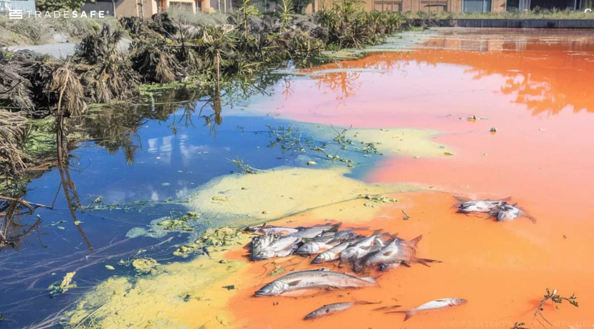

Chemical waste of any types in different industrial sectors are managed and mismanaged in different ways when handling. The nature of these wastes are contagious that can harm the inhabitants and change the life cycles because every inhabitants are made out of chemicals. There are different types of chemical waste handling, preventing or deposition programs that are used today to avoid its poison while under developed countries do not really care about it. In other words, the mining, petroleum, agricultural, factories and list goes down that involves chemicals doesn’t take responsibilities but store or deposit them any how that resulted in affecting countless inhabitants. It either affects them direct or destroys their food chain in which unbalanced sequence had started and is an ongoing global disaster affecting our planet. Theme of this research program is about going against the hazardous waste disposal and storage program.

Chemical waste generated from industrial, mining, petroleum, agricultural, and manufacturing sectors can affect land, water, air, and biological systems.
The research aims to contribute to discussions on sustainable waste management and environmental protection through scientific analysis and innovation.